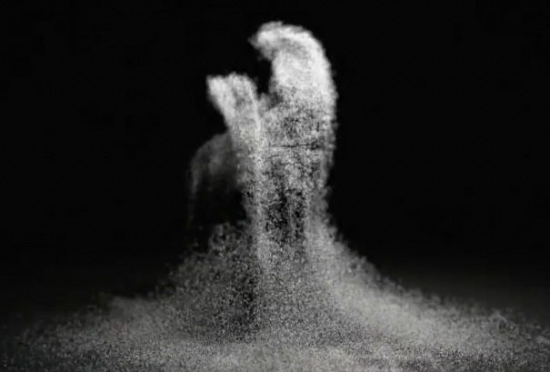

Preparation
Download and install processing. Processing is a flexible software sketchbook and a language for learning how to code. It is used intensively throughout the creative industry, because it relatively easy to get things up and running, to create nice and appealing visuals and to add interactivity. Download version 3.5.*, because version 4 is only in beta at the moment. Be sure you have Processing up and running before the lab course, as we will assume that everything works as expected.
Watch this video (4:44) in order to get an idea of the possibilities of processing. Also, study the works Oasis (Yunsil Heo), Replica (Alex Vessels and Jeff Howard), and Unnamed Soundsculture (Daniel Franke). These are relatively old works, but they are mentioned in the video.

Go over the following tutorials. If you are completely new to programming, these will help you getting up to speed with basic methodologies and techniques. If you are already familiar with programming, these will help you getting to know the particularities of Processing.
Excercises
Excercise 1: Basic interaction
As explained, the basic flow of any processing sketch (as programs are called in processing-vernacular) is setup() once and draw() indefinitely. The first of these methods sets up the stage for your program (size, speed, color, ...) while in the seconds method you do everything that needs to be done while your program is running.
In the examples, the draw()-methods just followed the mouse, drawing lines or circles as it went over the screen. In this first set of excersises we're going to add some interactivity.
Make a new sketch and copy the following code in the editor. Try to predict and explain what is going on before you run it (have a look at the API-reference if you are wondering about the particulars of the methods).
int CIRCLE_SIZE = 30;
void setup() {
size(600,600);
background(82,157,82);
}
void draw() {
background(82,157,82);
if (CIRCLE_SIZE > 600) {
CIRCLE_SIZE = 30;
}
strokeWeight(8);
stroke(70,200,70);
ellipse(300,300,CIRCLE_SIZE, CIRCLE_SIZE);
CIRCLE_SIZE = CIRCLE_SIZE + 10;
}Make use of the property mousePressed to stop the program-flow while the mouse is pressed. Note that there are several ways to do it, most of which are correct.
Remove your elaboration of the previous assignment. Also, remove the automatic growing of the green circle. Next, add code so that the size of the green circle is determined by the x-position of the mouse on the screen. Make use of the property mouseX, that always contains the current horizontal position of the mouse (top left being point (0,0)). Note that the maximum size of the green circle is the same as the size of the screen (yes, we did that on purpose).
Excercise 2: Basic coloring
Make a new sketch and copy the following code, which creates a new window with four colored boxes on top of it. Study the code in order to get an idea of its workings.
int[] MOUSEPOS = new int[2];
void setup() {
size(800,600);
background(255);
fill(255,0,0);
rect(80,50,100,100);
fill(0,255,0);
rect(260,50,100,100);
fill(0,0,255);
rect(440,50,100,100);
fill(0,255,255);
rect(620,50,100,100);
}
void draw() {
//
}
void mouseClicked() {
MOUSEPOS[0] = mouseX;
MOUSEPOS[1] = mouseY;
println ("mouse position: (" + mouseX + "," + mouseY + ")");
}

Now update the code so that the background of the window is whatever color is clicked on (the color of one of the four squares). As has been explained, you cannot easily check whether a click was done on an object, so you'll have to use mouseX and mouseY in order to see what square (if one at all) the mouse was on when it was clicked.